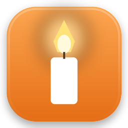

<!DOCTYPE html>
<html lang="pl">
<head>
<meta charset="utf-8">
<title>Modlitewnik</title>
<link rel="stylesheet" href="../wspolne/amenos.css">
<script src="../wspolne/dane.js"></script>
<script src="../wspolne/liturgia.js"></script>
<script src="../wspolne/amenos.js"></script>
<script src="../wspolne/dzwiek.js"></script>
<style>
  body { display: grid; grid-template-columns: 250px 1fr; height: 100vh; }
  aside { background: #F1EFE9; border-right: 1px solid #E2DDD0; display: flex; flex-direction: column; padding: 18px 10px; gap: 2px; overflow-y: auto; }
  aside h2 { padding: 0 12px 12px; display: flex; gap: 10px; align-items: center; }
  aside h2 img { width: 32px; }
  .poz { padding: 9px 14px; border-radius: 10px; cursor: pointer; color: #3D4250; }
  .poz:hover { background: rgba(0, 0, 0, .04); }
  .poz.wyb { background: var(--akcent-jasny); color: var(--tekst); font-weight: 650; }
  .poz.roz { font-weight: 650; margin-top: 8px; }
  .aniol { margin-top: auto; padding: 12px; font-size: 12.5px; color: var(--szary); display: flex; align-items: center; gap: 8px; }
  .aniol::before { content: ""; width: 8px; height: 8px; border-radius: 50%; background: #22C55E; box-shadow: 0 0 0 3px #22C55E33; }
  main { background: #FBF7EC; overflow-y: auto; display: flex; flex-direction: column; align-items: center; padding: 34px 40px; }
  .tytul { font-family: "DejaVu Serif", Georgia, serif; font-size: 30px; color: #6B3A12; text-align: center; }
  .ozdoba { width: 220px; height: 1px; background: linear-gradient(90deg, transparent, #D8C49A, transparent); margin: 14px 0 22px; }
  .tekst { font-family: "DejaVu Serif", Georgia, serif; font-size: 19px; line-height: 1.75; color: #2E2618; text-align: center; max-width: 640px; }
  .tekst .inicjal { float: left; font-size: 58px; line-height: .9; color: #A3261B; margin: 6px 8px 0 0; }
  .dol { margin-top: auto; padding-top: 24px; display: flex; gap: 16px; align-items: center; }
  .status { color: #8A6A20; font-weight: 600; min-height: 22px; text-align: center; }
  .paciorki { display: flex; align-items: center; gap: 14px; margin: 26px 0 10px; position: relative; }
  .paciorki::before { content: ""; position: absolute; left: 0; right: 0; top: 50%; height: 2px; background: #B59A6A; z-index: 0; }
  .pac { width: 30px; height: 30px; border-radius: 50%; background: #fff; border: 2px solid #B59A6A; z-index: 1; cursor: pointer; transition: transform .15s, background .15s; }
  .pac.zrob { background: radial-gradient(circle at 35% 35%, #fff8, transparent 40%), var(--akcent); border-color: var(--akcent); }
  .pac.teraz { box-shadow: 0 0 0 6px var(--akcent-mgla); animation: puls 1.2s infinite; }
  .pac.ojcze { width: 40px; height: 40px; background: radial-gradient(circle at 35% 35%, #C08A5A, #7A4A22); border: 0; }
  .krzyzyk { width: 8px; height: 40px; background: #C9A43A; border-radius: 2px; position: relative; z-index: 1; margin-right: -4px; }
  .krzyzyk::after { content: ""; position: absolute; left: -10px; top: 10px; width: 28px; height: 8px; background: #C9A43A; border-radius: 2px; }
  @keyframes puls { 50% { box-shadow: 0 0 0 10px var(--akcent-tlo); } }
  .tajemnica { font-size: 21px; font-weight: 650; color: var(--akcent); text-align: center; max-width: 560px; }
</style>
</head>
<body>
<aside id="lista">
  <h2>Modlitewnik</h2>
</aside>
<main id="strona"></main>
<script>
"use strict";
Amen.ustawAkcent();
const N = AMEN_DANE.modlitwy.length;
let wyb = 0;
const licznik = Amen.wczytaj("modlitwy-licznik", {});
const roz = Amen.wczytaj("rozaniec", { pac: 0, dzies: 0, razem: 0 });
const ODMOWIONE = ["Zapisane w niebie ✓", "Anioł Stróż przybił pieczątkę.", "Niebo potwierdza odbiór.",
                   "Święty Piotr dopisał to do zeszytu.", "Modlitwa doręczona. Bez opłat i bez kolejki."];
const TAJ_NAZWA = ["radosne", "światła", "bolesne", "chwalebne"];
const TAJ = [
  ["Zwiastowanie Najświętszej Maryi Pannie", "Nawiedzenie świętej Elżbiety", "Narodzenie Pana Jezusa", "Ofiarowanie Pana Jezusa w świątyni", "Odnalezienie Pana Jezusa w świątyni"],
  ["Chrzest Pana Jezusa w Jordanie", "Objawienie się Pana Jezusa w Kanie Galilejskiej", "Głoszenie Królestwa Bożego i wzywanie do nawrócenia", "Przemienienie na górze Tabor", "Ustanowienie Eucharystii"],
  ["Modlitwa Pana Jezusa w Ogrójcu", "Biczowanie Pana Jezusa", "Cierniem ukoronowanie", "Dźwiganie krzyża", "Śmierć Pana Jezusa na krzyżu"],
  ["Zmartwychwstanie Pana Jezusa", "Wniebowstąpienie Pana Jezusa", "Zesłanie Ducha Świętego", "Wniebowzięcie Najświętszej Maryi Panny", "Ukoronowanie Maryi na Królową Nieba i Ziemi"],
];
const tajDnia = () => [3, 0, 2, 3, 1, 2, 0][Amen.teraz().dow];   /* Nd chwalebne, Pn radosne, Wt bolesne, Śr chwalebne, Cz światła, Pt bolesne, So radosne */
let status = "";

function lista() {
  const a = document.getElementById("lista");
  a.querySelectorAll(".poz,.aniol").forEach(e => e.remove());
  AMEN_DANE.modlitwy.forEach((m, i) => a.insertAdjacentHTML("beforeend", `<div class="poz ${i === wyb ? "wyb" : ""}" data-i="${i}">${Amen.esc(m.tytul)}</div>`));
  a.insertAdjacentHTML("beforeend", `<div class="poz roz ${wyb === N ? "wyb" : ""}" data-i="${N}">✝ Różaniec</div><div class="aniol">Anioł Stróż: online</div>`);
  a.querySelectorAll(".poz").forEach(e => e.onclick = () => { wyb = +e.dataset.i; status = ""; rysuj(); });
}

function modlitwa() {
  const m = AMEN_DANE.modlitwy[wyb], pierwsza = m.linie[0] || "";
  return `<div class="tytul">${Amen.esc(m.tytul)}</div><div class="ozdoba"></div>
    <div class="tekst"><span class="inicjal">${Amen.esc(pierwsza[0])}</span>${Amen.esc(pierwsza.slice(1))}<br>${m.linie.slice(1).map(Amen.esc).join("<br>")}</div>
    <div class="dol"><button class="przycisk glowny duzy" id="odm">Odmówione ✓</button><span class="szary">Dziś odmówiono: <b>${licznik[m.tytul] || 0}</b></span></div>
    <div class="status">${status}</div>`;
}

function rozaniec() {
  const tj = tajDnia();
  let pac = '<div class="krzyzyk"></div><div class="pac ojcze" title="Ojcze nasz"></div>';
  for (let i = 0; i < 10; i++) pac += `<div class="pac ${i < roz.pac ? "zrob" : ""} ${i === roz.pac ? "teraz" : ""}" data-p="${i}"></div>`;
  return `<div class="tytul">Różaniec</div><div class="szary" style="margin-top:6px">Dziś tajemnice ${TAJ_NAZWA[tj]}</div><div class="ozdoba"></div>
    <div class="tajemnica">${roz.dzies + 1}. ${TAJ[tj][roz.dzies]}</div>
    <div class="paciorki">${pac}</div>
    <div class="szary">Dziesiątka ${roz.dzies + 1} z 5 · Zdrowaś Maryjo razem: <b>${roz.razem}</b></div>
    <div class="dol"><button class="przycisk glowny duzy" id="plus">Zdrowaś Maryjo &nbsp;+1</button><button class="przycisk" id="nowo">Od nowa</button></div>
    <div class="status">${status}</div><div class="szary maly" style="margin-top:8px">Spacja albo Enter - kolejne Zdrowaś Maryjo</div>`;
}

function plus() {
  roz.razem++; status = "";
  Dzwiek.efekt("paciorek");
  if (++roz.pac === 10) {
    roz.pac = 0;
    Dzwiek.pik(1568, undefined, 0.2);
    if (roz.dzies === 4) { roz.dzies = 0; status = "Cała część różańca! Babcia byłaby dumna."; Dzwiek.dzwon(392, undefined, 0.3); }
    else { roz.dzies++; status = "Dziesiątka zaliczona! Anioł Stróż przybija piątkę."; }
  }
  Amen.zapisz("rozaniec", roz);
  rysuj();
}

function rysuj() {
  lista();
  const s = document.getElementById("strona");
  s.innerHTML = wyb < N ? modlitwa() : rozaniec();
  if (wyb < N) document.getElementById("odm").onclick = () => {
    const t = AMEN_DANE.modlitwy[wyb].tytul;
    licznik[t] = (licznik[t] || 0) + 1;
    Amen.zapisz("modlitwy-licznik", licznik);
    status = ODMOWIONE[(licznik[t] - 1) % ODMOWIONE.length];
    Dzwiek.efekt("powiadom");
    rysuj();
  };
  else {
    document.getElementById("plus").onclick = plus;
    document.getElementById("nowo").onclick = () => { roz.pac = roz.dzies = 0; status = "Zaczynamy od nowa. W imię Ojca i Syna, i Ducha Świętego."; Amen.zapisz("rozaniec", roz); rysuj(); };
    s.querySelectorAll("[data-p]").forEach(e => e.onclick = () => { if (+e.dataset.p === roz.pac) plus(); });
  }
}
addEventListener("keydown", e => {
  if (e.key === "ArrowUp" && wyb > 0) { wyb--; status = ""; rysuj(); }
  else if (e.key === "ArrowDown" && wyb < N) { wyb++; status = ""; rysuj(); }
  else if ((e.key === " " || e.key === "Enter") && wyb === N) { e.preventDefault(); plus(); }
});
/* licznik "dziś" zeruje się następnego dnia */
const dzien = new Date().toDateString();
if (Amen.wczytaj("modlitwy-dzien", "") !== dzien) { for (const k in licznik) delete licznik[k]; Amen.zapisz("modlitwy-licznik", licznik); Amen.zapisz("modlitwy-dzien", dzien); }
rysuj();
</script>
</body>
</html>
